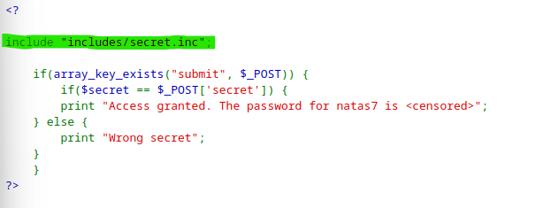
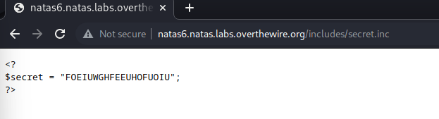
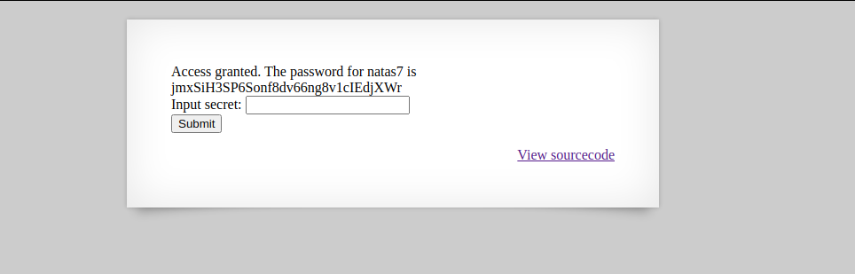

In this lvl, I needed to input a secret, and I also could view a PHP source code.
That looks like a password query to me. The password is apparently stored in "inclued/secert.inc".
So I just tried to open thet secret.inc file.
So i copied and tried this secret.
And here we go Again!!
Back to the Menu Natas7